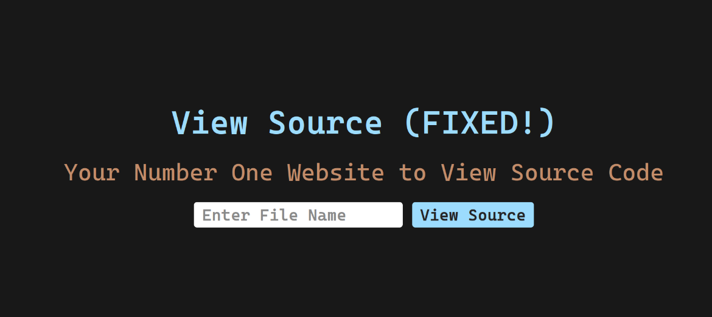
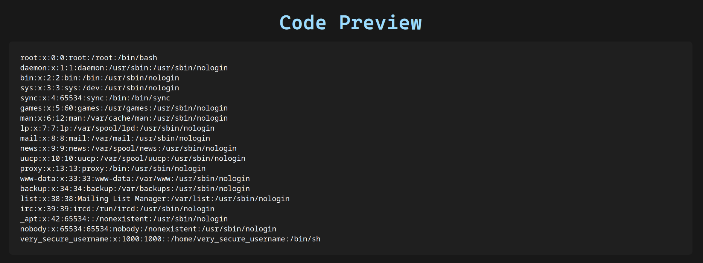
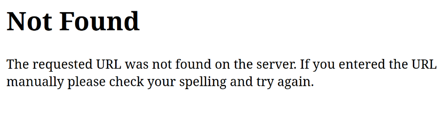
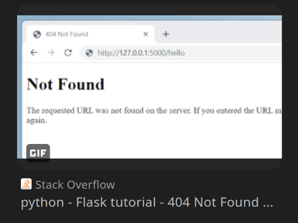

ybn: writeups
by cane (from puzzlehunts)
i participated in YBN CTF, a singapore-based ctf that ran for 36 hours. i'd never done a proper-proper ctf before, so i was pretty happy to place in 8th alongside my team rkfc.
some background - i'm definitely new to this, but i've been cutting my teeth on puzzle shit ever since i was like 7, ARGs, puzzle hunts, crosswords, and i basically approached the challenges the same way i would a puzzlehunt puzzle. there's a specific aspect of these ctfs i'd like to cover, something i'd call the Art of the Cheese, which got me a handful of quick flags just by trying to use intuition and making some lucky guesses.
my overall thoughts on the CTF were that i enjoyed it a lot! there were a lot of great challenges which were very fun and well written, and diving headfirst into some of the categories i felt uncertain about taught me a lot of valuable information. i'd definitely participate in a further YBN, and i think they did a good job. :D
now, onto the writeups...
web
view source revenge
this was one of my favorite challenges - i recognized what to do essentially immediately, as someone who has just enough experience in flask to understand the vulnerability present. it's also just really fun trying to pull off the given "exploit", a lot of pieces to puzzle over and fit together that ultimately culminate very satisfyingly.

we start with the most obvious lfi attack ever. we quickly verify that the lfi does indeed work by typing in /etc/passwd:

that is indeed lfi alright. however, if we try to leak any flag, we don't get a file-not-found error, we get a completely blank file instead. we can instead peek at the source code of the file, which for flask apps is typically app.py-
but wait, cane (from puzzlehunts), how are you so sure this is a flask app? i introduce the very cool and epic technique known as fingerprinting through 404 pages. different frameworks will have different 404 pages, and this is a very easy way to quickly gain footing with what you're working with.
just trigger a 404 and search the text:


so we know we're dealing with a flask app - we can inspect the source by using lfi for the app.py file.